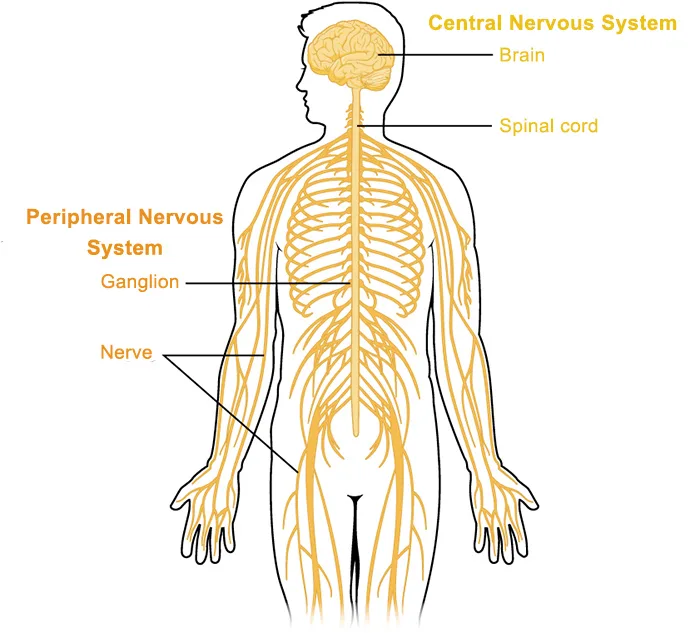
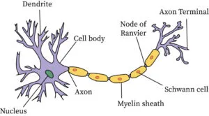
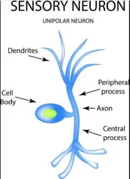
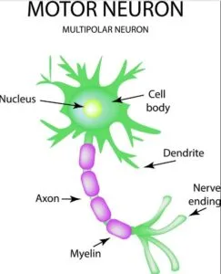
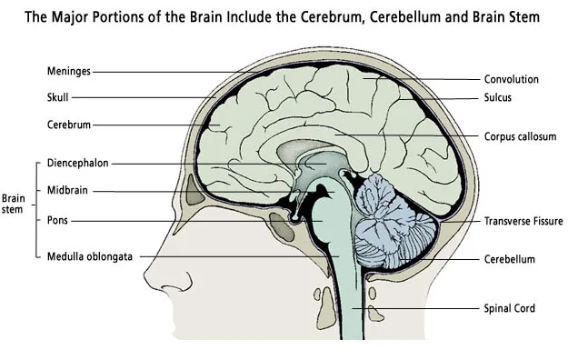
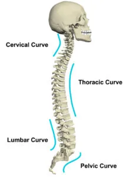
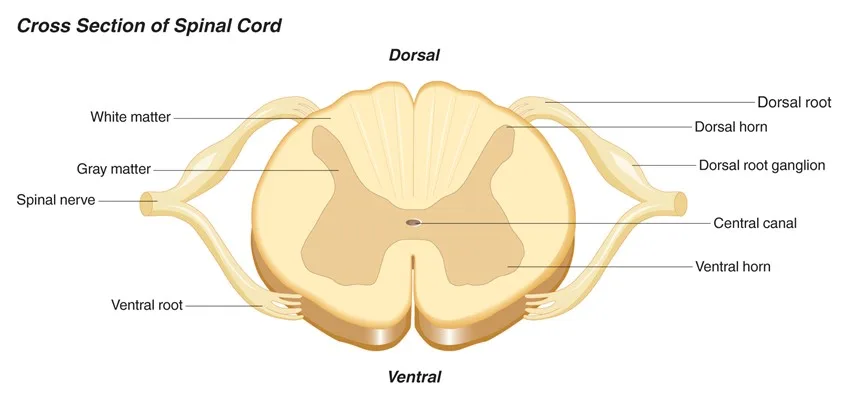
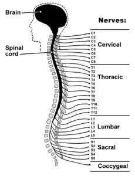

Expanded Nursing Uganda Explanation
Applied anatomy and Physiology of the nervous system should be understood beyond a short definition. Link the concept to patient history, focused assessment, common risks, nursing priorities, documentation and evaluation of outcomes.
01 Overview
REVIEW OF THE ANATOMY AND PHYSIOLOGY OF NERVOUS SYSTEM
02 Anatomy of the Nervous System
The nervous system can be separated into parts based on structure and on function:
Structurally , it’s organized into the central nervous system (CNS) and the peripheral nervous system (PNS) .
The CNS consists of the brain and spinal cord , both of which originate in the embryo. The PNS comprises all neural structures outside the CNS, connecting it to the rest of the body. These structures develop from neural crest cells and as extensions of the CNS itself. The PNS includes spinal and cranial nerves, visceral nerves and plexuses, and the enteric nervous system.
Functionally , the nervous system is divided into somatic and visceral components. The somatic nervous system (from the Greek ‘soma,’ meaning body) innervates structures derived from somites, such as skin and most skeletal muscle.
It’s primarily responsible for receiving and responding to external environmental information. The visceral nervous system (from the Greek ‘viscera,’ meaning guts) innervates organ systems and other visceral elements like smooth muscle and glands throughout the body. It mainly detects and responds to information about the body’s internal environment. The neuron, with its cell body, axon, and synapse, is the functional unit of the entire nervous system.
- Central Nervous System (CNS): Composing the brain and spinal cord.
- Peripheral Nervous System (PNS): Includes structures outside the CNS connecting it to the body.
- Somatic Part: Innervates structures from somites (skin, skeletal muscles). Responds to external environmental stimuli.
- Visceral Part: Innervates organ systems, smooth muscles, and glands. Detects and responds to internal environmental stimuli.
- Nucleus – controls the entire neuron.
- Dendrite – receives stimulus and carries its impulses toward the cell body.
- Cell Body (soma) – has a nucleus & cytoplasm. It acts as a factory of the neuron. It produces all protein for the dendrites and neurotransmitters.
- Axon – fiber which carries impulses away from the cell body i.e it forms a conduction region for the neuron.
- Schwann Cells/ neurolemmocyte – cells which produce myelin or fat layer in the Peripheral Nervous System (axon maintenance and regeneration) It’s a glial cell that wraps the nerve fibre in PNS.
- Myelin sheath – dense lipid layer which insulates the axon ( makes the axon look gray) It speeds-up nerve transmission.
- Node of Ranvier – gaps or nodes in the myelin sheath. They speed up nerve transmission.
- Axon terminals – form junctions with other cells.
- Sensory neurons – bring messages to CNS.
- Motor neurons – carry messages from CNS.
- Interneurons – between sensory & motor neurons in the CNS.
Neuron – Functional Unit:
- Composed of nucleus, dendrites, cell body (soma), axon, Schwann cells, myelin sheath, Node of Ranvier, and axon terminals.
- Three types: sensory neurons (to CNS), motor neurons (from CNS), and interneurons (between sensory and motor neurons in CNS).
Other Nervous System Cells:
- Satellite Cells: Surround neuron cell bodies in ganglia. Maintain a micro-environment and provide insulation.
- Ependymal Cells: Line CNS cavities, secrete cerebrospinal fluid, and form choroid plexuses.
- Oligodendrocytes: Wrap around CNS neurons to produce myelin sheath.
- Astrocytes: Glial cells in the CNS. Anchor neurons to blood vessels and form the blood-brain barrier.
- Microglia : Monocytes in the nervous system. Move to damaged tissue for phagocytosis.
03 Brain Anatomy & Physiology.
- Largest brain structure with frontal , temporal , parietal , and occipital lobes.
- Divided into hemispheres by the longitudinal cerebral fissure.
- Cerebral cortex (gray matter) and subcortical white matter.
- Responsible for memory , sensory perception (pain, temperature, touch, sight, hearing, taste, smell), and control of skeletal muscle contractions.
- Located behind the pons, below the occipital lobe.
- Oval-shaped with hemispheres separated by vermis.
- Contains gray and white matter.
- Coordinates voluntary muscle movement, maintains posture and balance , and contributes to learning and language processing .
- Midbrain surrounds the cerebral aqueduct, connecting cerebrum and pons.
- Pons, in front of the cerebellum, have nuclei and nerve fibers.
- Medulla oblongata extends from the pons, continuous with the spinal cord, containing gray and white matter.
- Midbrain acts as a relay station for ascending and descending nerve fibers, connecting cerebrum with lower brain fibers and spinal cord.
- Pons collaborates with the medulla to control respiration .
- Medulla oblongata controls respiration , cardiovascular function , and reflexes (vomiting, coughing, sneezing, swallowing).
- Connects cerebrum and midbrain.
- Houses thalamus (gray and white matter masses) and hypothalamus (below thalamus, connected to pituitary gland).
Thalamus
- Relays and distributes impulses from various brain parts to the cerebral cortex.
- Plays a role in memory processing .
Hypothalamus
- Controls the autonomic nervous system .
- Regulates appetite , thirst , body temperature , water balance , emotional reactions , and sexual behavior.
- Influences sleeping and waking cycles through melatonin from the pineal gland.
- Secretes ADH (antidiuretic hormone) and oxytocin .
04 Anatomy of the Spinal Cord
- Cylindrical shape with circular to oval cross-section and a central canal.
- Comprises 31 pairs of spinal nerves, each with sensory (dorsal root) and motor (ventral root) fibers.
Physiology of the Spinal Cord:
Spinal cord provides communication between brain and the peripheral nerves. Tracts of white matter of the spinal cord carry sensory impulses to the brain and motor impulses from the brain to the skeletal muscles.
The grey matter of the spinal cord is a site of integration of reflexes which is rapid involuntary action in relation to a particular stimulus.
- Facilitates communication between the brain and peripheral nerves.
- White matter tracts carry sensory impulses to the brain and motor impulses from the brain to skeletal muscles.
- Grey matter serves as the site for reflex integration , rapid involuntary actions in response to stimuli .
Meninges :
Three connective tissue coverings surrounding and protecting the brain and spinal cord.
- Dura Mater: Thickest and outermost layer, continuous with cranial dura mater. The spinal dura mater is continuous with the cranial dura mater at the foramen magnum of the skull and is the outermost meningeal membrane. In the cranial cavity, one layer of the dura mater is fused to the bone and represents the periosteum, but the spinal dura mater is separated from the bones of the vertebral canal by an extradural space. Inferiorly, the Dural sac dramatically narrows at the level of the lower border of vertebra SII and forms an investing sheath for the pial part of the filum terminale of the spinal cord. The dural part of the filum terminale attaches to the posterior surface of the vertebral bodies of the coccyx.
- Arachnoid Mater : Thin, delicate membrane against the internal surface of the dura mater. This is a thin delicate membrane against, but not adherent to, the deep surface of the dura mater. It is separated from the pia mater by the subarachnoid space. The arachnoid mater ends at the level of vertebra SII. The sub-arachnoid space contain CSF.
- Pia Mater: Adherent to the brain and spinal cord, extends into the anterior median fissure, and forms the denticulate ligament. It extends into the anterior median fissure and reflects as sleeve-like coating onto posterior and anterior rootlets and roots as they cross the subarachnoid space. As the roots exit the space, the sleeve-like coatings reflect onto the arachnoid mater. On each side of the spinal cord, a longitudinally oriented sheet of pia mater (the denticulate ligament) extends laterally from the cord toward the arachnoid and dura mater. Because the subarachnoid space can be accessed in the lower lumbar region without endangering the spinal cord, it is important to be able to identify the position of the lumbar vertebral spinous processes. The LIV vertebral spinous process is level with a horizontal line between the highest points on the iliac crests. In the lumbar region, the palpable ends of the vertebral spinous processes lie opposite their corresponding vertebral bodies. The subarachnoid space can be accessed between vertebral levels LIII and LIV and between LIV and LV without endangering the spinal cord.
05 CRANIAL NERVES and ASSESSMENT
In a clinical practice, it’s very important for the nurse to know the basic cranial nerves, there location and function. Below are the major cranial nerves in the body.
Olfactory Nerve (I):
- Function : Smell.
- Assessment : Identify different smells with eyes closed.
Optic Nerve (II):
- Function : Vision.
- Assessment : Visual test and examination with a special light.
Oculomotor Nerve (III):
- Function : Pupil size and certain eye movements.
- Assessment : Pupil examination with light, eye movement in various directions.
Trochlear Nerve (IV):
- Function : Eye movement.
- Assessment : Eye movement evaluation.
Trigeminal Nerve (V):
- Function : Face sensation, inside mouth sensation, and chewing.
- Assessment : Touch face, observe biting down.
Abducens Nerve (VI):
- Function : Eye movement.
- Assessment : Follow light or finger for eye movement.
Facial Nerve (VII):
- Function : Face muscle movement and taste.
- Assessment : Identify tastes, smile, move cheeks, show teeth.
Acoustic Nerve (VIII):
- Function : Hearing.
- Assessment : Hearing test.
Glossopharyngeal Nerve (IX):
- Function : Taste and swallowing.
- Assessment : Identify tastes on the back of the tongue, test gag reflex.
Vagus Nerve (X):
- Function : Swallowing, gag reflex, taste, and part of speech.
- Assessment : Swallowing, elicit gag response with a tongue blade.
Accessory Nerve (XI):
- Function : Shoulder and neck movement.
- Assessment : Turn head side to side against resistance, shrug shoulders.
Hypoglossal Nerve (XII):
- Function : Tongue movement.
- Assessment : Stick out tongue, speak.
FIND THE REST OF THE ASSESSMENT BY CLICKING HERE
Spinal Nerves
Spinal nerves , like most nerves, contain both sensory and motor fibers. They are named and numbered according to the region of the vertebral column from which they originate:
- 8 cervical nerves (C1-C8), 12 thoracic nerves (T1-T12),
- 5 lumbar nerves (L1-L5),
- 5 sacral nerves (S1-S5), and
- 1 coccygeal nerve.
Nerve C1 emerges between the cranium and the atlas (first cervical vertebra). All other spinal nerves emerge below the vertebra (or former vertebra, in the case of the sacrum) corresponding to their number.
A plexus is a network of int erconnected nerve fibers that recombine to form new, named peripheral nerves .
Dermatomes are areas of skin and muscle innervated by specific spinal nerves . A dermatome map (as shown in the figure) is a valuable diagnostic tool. It helps determine the origin of somatic pain, numbness, or tingling, especially when these symptoms result from pressure or inflammation of the spinal cord or nerve roots.
- Dermatomes are somatic or musculocutaneous areas served by fibers from specific spinal nerves.
- Dermatome map aids in diagnosing somatic pain, numbness, tingling caused by spinal cord or nerve root pressure or inflammation.
Myotome:
- Region of s keletal muscle innervated by a single nerve or spinal cord level.
- Most muscles receive input from multiple spinal cord levels.
06 Nursing Uganda Clinical Lens
Use The Nervous system as a practical nursing topic, not only a memorized definition. Start with normal structure and function, then connect it to assessment findings and disease.
- What to understand first: define the nervous system, identify the normal or expected pattern, then explain what changes when the patient is unwell.
- Why it matters in care: the nurse must recognize risk early, explain findings clearly, document accurately and know when to escalate.
- How to revise it: connect each point to assessment, nursing diagnosis or care problem, intervention, rationale and evaluation.
07 Assessment Guide
- Relevant inspection, palpation, movement, auscultation, vital signs or neurological checks.
- Normal findings, abnormal findings and what each abnormality may indicate.
- Patient history, risk factors and how the body system affects other systems.
08 Nursing Priorities, Rationales and Outcomes
- Use anatomy to explain symptoms and guide focused assessment.
- Recognize findings that need urgent escalation.
- Teach the patient using simple body-system language.
The rationale for these priorities is patient safety: nursing actions should prevent deterioration, reduce discomfort, support recovery and create clear evidence for the next caregiver.
- Expected outcome: The learner can explain normal function, identify abnormal signs and connect them to nursing action.
09 Patient Teaching and Revision Check
- Explain the nervous system in simple language the patient or caregiver can repeat back.
- Teach warning signs, medicine or follow-up instructions, hygiene or lifestyle points where relevant.
- For exams, prepare a short answer using: definition, causes or risk factors, signs, assessment, management, complications and prevention.
- For ward practice, document baseline findings, actions taken, patient response and the plan for review.
Illustrations and Diagrams (19)








11 more diagrams available, open the lesson for full illustrations.
Related Video Lectures
Watch nursing lecture videos on YouTube for this topic. Opens in a new tab.
Watch on YouTubeExternal link: YouTube may use its own cookies and terms. Nursing Uganda is not affiliated with YouTube.